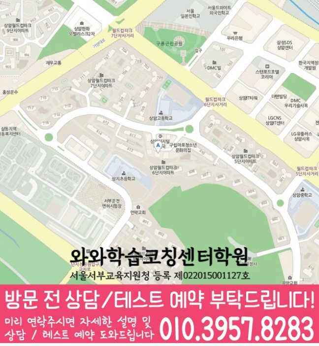

국어 수업 가능 학년
상담 시 가능 학년 확인
KOREAN · ENGLISH · MATH LOCAL GUIDE
상암동 국영수학원 상담을 위해 중학교 3학년 학생의 세 과목 우선순위, 학교 시험 대응, 과제·오답 관리와 수업 가능 학년·센터 위치를 안내합니다.
30초 핵심 안내
상암동 국영수학원이 학생에게 맞는지 판단하려면 다음 항목에 대한 설명부터 확인하세요. 문장제에서 필요한 정보와 불필요한 정보를 구분하지 못하는 편인 데다 최근 시험 직전에 여러 교재를 동시에 펼치는 모습을 보이는 중학교 3학년 학생에게 적합한 수업은 국어·영어·수학의 약점을 각각 진단하되 주간 과제와 학교 일정은 하나의 계획으로 조정하는 수업입니다. 서울 마포구 상암동의 제공 자료를 기준으로 학교별 내신 자료와 최근 시험 자료를 함께 대조하고 학원교통 관련 조건과 학습관리 기준을 각각 구분해 확인해야 합니다. 방문 주소는 서울특별시 마포구 상암동 상암산로1길 73 202호입니다. 예정된 요일과 시간대에 상암동 센터까지의 이동·귀가 시간을 확인하면 일정의 현실성을 판단하기 쉽습니다.
상암동은 수업 가능 생활권 기준입니다. 실제 방문 센터는 와와학습코칭센터 상암점이며, 주소와 등록 정보는 아래 센터 기준 정보에서 확인할 수 있습니다.
상담 시 가능 학년 확인
초3 · 초4 · 초5 · 초6 · 중1 · 중2 · 중3 · 고1 · 고2 · 고3
초3 · 초4 · 초5 · 초6 · 중1 · 중2 · 중3 · 고1 · 고2 · 고3


센터 기준 정보
센터명·주소·등록 정보와 교습비 확인 경로를 상담 전에 살펴볼 수 있도록 정리했습니다.
서울 마포구 상암동 상담 기준
서울특별시 마포구 상암동 상암산로1길 73 202호
서울서부교육지원청 등록 제022015001127호
실제 수업 가능 시간은 학년·과목별 일정에 따라 상담에서 확인합니다.
동네명은 수업 가능 지역을 찾기 위한 안내 기준입니다.
중동초 · 상지초 · 상암초
상암중 · 중암중 · 성산중 · 성사중 · 덕은한강중
상암고 · 예일여고 · 대성고 · 숭실고 · 가재울고
센터명·주소·등록번호·가능 학년·학교 참고 정보는 제공된 센터 자료를 기준으로 정리했으며, 실제 수업 범위와 일정은 상담에서 다시 확인합니다.
지역별 학습 안내
학생의 과목별 학습 상황과 상담 전에 확인할 기준을 여섯 가지 주제로 나누어 정리했습니다.
중학교 3학년에게 맞는지 확인할 때 상암동 국영수학원의 수업 횟수보다 아래 여섯 항목을 먼저 살펴야 합니다: ① 교재를 바꾸는 기준은 무엇인가 ② 진도보다 복습이 필요할 때 계획을 늦출 수 있는가 ③ 수행평가와 지필평가를 함께 관리하는가 ④ 반복되는 실수를 어떤 항목으로 기록하는가 ⑤ 학원교통 안내의 담당자는 누구인가 ⑥ 장기 등록 전에 단기 점검 시점이 있는가.
이 지역 국영수학원의 학원교통 관련 설명이 매력적으로 보여도 수업 방식과 학생이 해야 할 과제를 학생 스스로 설명하지 못한다면 추가 질문이 필요합니다. 학원교통 관련 조건까지 포함한 최종 선택은 중학교 3학년의 수면, 학교 과제, 복습 시간을 해치지 않는 범위에서 결정해야 합니다.
상암동의 학부모가 놓치기 쉬운 사례는 문장제에서 필요한 정보와 불필요한 정보를 구분하지 못하는 편인 데다 최근 시험 직전에 여러 교재를 동시에 펼치는 모습을 보이는 중학교 3학년 학생입니다. 지역 내 상담에서는 점수 외에 문제 읽기 순서, 숙제 시작 시간, 질문 기록과 오답 재도전 간격을 확인해야 학습 원인을 찾을 수 있습니다.
세 과목 학습관리에서는 보호자가 매일 대신 확인하기보다 학생이 체크하고 담당자가 검토하며 보호자에게 핵심만 공유하는 단계적 역할 분담이 필요합니다. 수업 계획의 이유를 학생이 납득하고 설명할 수 있어야 해당 학원에서 정한 과제도 주도적으로 실행하기 쉽습니다.
상암동의 중학교 3학년 기준으로 학원교통을 살필 때는 학생이 감당할 수 있는 시간과 현재 약점을 먼저 놓아야 합니다. 지역 내 기준으로는 지도상 거리보다 학교 종료 뒤 실제 이동 시간, 수업 종료 시각, 귀가 방식, 지각이나 결석 연락 절차까지 포함해 판단해야 합니다.
상암동 국영수학원에서 학원교통을 설명할 때는 주차·셔틀·차량 안내가 있다면 이용 가능 시간, 탑승 확인, 노선 변경, 보호자 인계 기준을 구체적으로 물어야 합니다. 학원교통은 특히 학교 종료 뒤 실제 이동과 귀가 시간을 기준으로 이용 가능 시간, 보호자 인계, 지각·결석 연락 방식을 확인해야 합니다.
상암동 학부모가 마지막으로 확인할 점은 다음과 같습니다: 가까워 보여도 학생이 혼자 이동하기 어려운 시간대라면 루틴이 흔들릴 수 있으므로 주중과 주말 동선을 각각 확인하는 것이 좋습니다. 상담 뒤 각자가 생각한 첫 목표와 점검 날짜를 말해 보면 설명이 충분했는지 판단할 수 있습니다.
해당 생활권에서 수학 약점이 두드러진 학생도 다른 두 과목을 방치하면 전체 학습 리듬이 흔들릴 수 있습니다.
상암동의 수학 수업에서는 진도 속도보다 이전 단원의 빈칸을 먼저 찾고 풀이 시작 근거와 계산 실수의 원인을 말하게 해야 합니다. 이 지역 국영수 과정의 영어 점검에서는 단어를 여러 번 읽는 것보다 가리고 회상하는 횟수를 늘리고 독해 뒤 요지와 근거를 남겨야 합니다.
해당 생활권의 중학교 3학년 과목 구성에서 국어 계획에서는 교과서와 학교 자료의 표현을 익히되 외부 지문에도 적용할 수 있도록 작품·문법·독서 오답을 원인별로 나누어야 합니다. 상암동 학생이 국어·영어·수학의 다음 시작 지점을 각각 말할 수 있다면 수업과 가정 학습이 연결되고 있다는 신호입니다.
서울 마포구 상암동 학생별 자료를 비교할 학교에는 중동초·상지초·상암초·상암중·중암중·성산중·성사중·덕은한강중·상암고·예일여고·대성고·숭실고·가재울고가 포함됩니다. 학생마다 교과서와 프린트, 평가 주차가 다르므로 공통 수업과 학교별 보완 항목을 구분해 살펴보아야 합니다. 학교 정보는 출발점일 뿐이며, 지역 학생의 시험 결과를 다음 과제와 복습 순서에 반영해야 의미가 있습니다.
세 과목 학습관리의 센터 위치는 서울특별시 마포구 상암동 상암산로1길 73 202호이고, 주소의 편리함뿐 아니라 학생이 정해진 시각에 꾸준히 도착하고 귀가 후 짧은 회상을 이어갈 수 있는 일정인지 살펴야 합니다.
이 지역의 오답 노트는 예쁘게 다시 쓰는 자료가 아니라 수학에서 틀린 이유, 필요한 개념, 재풀이 날짜, 다시 틀렸을 때 질문할 내용을 남기는 자료여야 합니다. 해당 생활권에서는 상담이나 행정 확인 때문에 중학교 3학년 학생의 당일 회상과 재풀이가 밀리지 않도록 학습 시간을 따로 확보해야 합니다.
지역 내 점검 주기는 짧을수록 좋은 것이 아니라 일일 체크는 실행, 주간 상담은 원인, 시험 후 분석은 다음 단원을 다루도록 목적을 나누어야 합니다. 해당 생활권 학부모가 학원교통 관련 홍보와 실제 운영을 구분하려면 안내 조건과 처리 기록이 일치하는지 확인해야 합니다.
FAQ
이 지역 국영수학원에서도 세 과목의 시간을 똑같이 늘릴 필요는 없습니다. 지역 학생은 수학의 핵심 약점을 집중적으로 다루되 다른 두 과목의 최소 복습 단위를 유지하는 계획이 현실적입니다.
상암동 학부모는 이 내용이 중학교 3학년의 수업 일정·비용·과제에 어떤 영향을 주는지를 질문해 보아야 합니다. 학원교통은 명칭보다 학생과 보호자에게 돌아오는 절차와 확인 기록이 중요합니다.
이 지역 국영수 수업에서 학교별 준비를 확인할 때는 학교명보다 최근 범위표와 시험지를 먼저 보아야 합니다. 같은 교재를 쓰더라도 보완할 프린트와 서술형 범위가 달라질 수 있습니다.
이 지역 국영수 과정의 진도 속도만으로 효과를 판단하기 어렵습니다. 상암동의 학습 계획을 자주 바꾸어 누적 기록이 끊긴 중학교 3학년 학생은 이전 단원 공백과 오답 재풀이를 먼저 확인한 뒤 새 단원 적용 문제를 혼자 해결할 때 다음 진도로 넘어가는 편이 안전합니다.
이 지역 국영수학원의 방문 기준 주소는 서울특별시 마포구 상암동 상암산로1길 73 202호입니다. 해당 생활권 학생의 학교 종료, 이동, 식사, 수업 뒤 귀가와 짧은 복습을 한 일정에 넣어 무리 없는지 확인해야 합니다.
상담 상황 예시
아래 내용은 홍보용 성공 사례가 아니라, 상암동에서 학원을 알아볼 때 적용할 수 있는 상담 예시입니다.
처음에는 상암동에서 가까운 곳을 찾는 데만 집중했습니다. 이 지역 국영수 과정을 비교해 보니 문장제에서 필요한 정보와 불필요한 정보를 구분하지 못하는 편인 데다 최근 시험 직전에 여러 교재를 동시에 펼치는 모습을 보이는 중학교 3학년 학생에게는 이동 시간뿐 아니라 수업 후 복습과 질문 회수가 중요했고 학원교통의 담당자와 변경 기준까지 확인해야 했습니다. 해당 생활권의 일상에 맞는지를 차분히 계산하니 광고 문구보다 지속 가능한 시간표가 먼저 보였습니다.